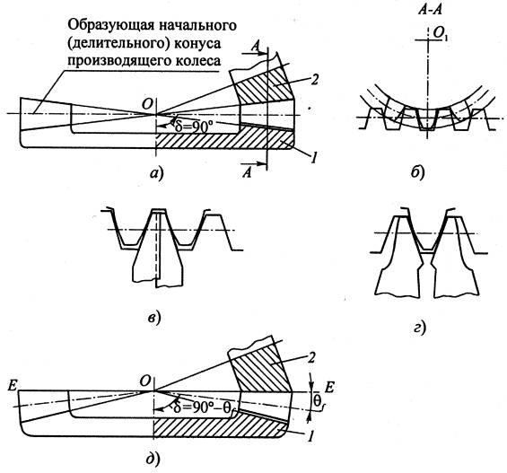

Нарезание зубьев конических колес, также как и цилиндрических колес, заключается в удалении металла из впадин между зубьями при черновой обработке и окончательном формировании зубьев при чистовой обработке.
В качестве режущих инструментов при черновой обработке прямозубых конических колес методом копирования применяют дисковые и пальцевые фрезы. Последние можно использовать и для нарезания криволинейных зубьев. Кинематика процесса зубонарезания по методу копирования проста: инструмент вращается вокруг своей оси и перемещается с некоторой подачей вдоль образующей конуса впадин детали, которая при этом неподвижна. После нарезания одной впадины с помощью делительного механизма станка производится поворот заготовки на один окружной шаг зубьев.
Профиль режущих кромок фрез при черновой обработке чаще всего делают прямолинейным с оставлением припуска на чистовую обработку. Диаметр вершин зубьев пальцевых фрез принимают несколько меньшим ширины дна впадины у внутреннего торца колеса, где она наименьшая, и больше половины ширины - у наружного торца, где она наибольшая.
В условиях единичного и мелкосерийного производств при отсутствии специальных станков дисковыми и пальцевыми фрезами можно производить также чистовую обработку зубьев на универсально-фрезерных станках. При этом профилирование режущих зубьев этих инструментов ведется по среднему сечению впадины зуба колеса с изменением угла установки оси фрезы относительно оси заготовки. Обработка ведется в два прохода: сначала обрабатывается боковая поверхность одного зуба колеса, а затем боковая поверхность соседнего зуба.
По методу копирования прямые зубья конических колес нарезают также круговыми протяжками. При этом за один оборот протяжки формируется одна впадина фасонного профиля.
Метод копирования используется также при нарезании криволинейных зубьев в так называемых полуобкатных передачах. В этом случае нарезание колеса z 2 производят либо зуборезными головками при выключенном движении обката, либо головками-протяжками. Отключение движения обката в обоих случаях позволяет сократить путь резания, увеличить режимы резания, а следовательно, и производительность обработки. При этом профиль режущих кромок инструмента и, соответственно, профиль нарезаемых зубьев в сечении, перпендикулярном линии зуба, прямолинейный. Следует отметить, что наибольшее увеличение производительности достигается при чистовой обработке колбе z 2 головками-протяжками.
Метод обкаточного огибания (обката) при нарезании прямозубых конических колес, а также конических колес с криволинейными зубьями получил большее применение, чем метод копирования, так как он позволяет изготавливать зубья с профилем, близким к эвольвентному. В основе этого метода лежит принцип зацепления нарезаемого колеса с плоским производящим колесом, у которого угол начального (делительного) конуса δ = 90°, т.е. образующие этого конуса лежат в плоскости, перпендикулярной оси колеса (а).
Здесь производящее колесо 1 - воображаемое колесо. Его роль выполняет люлька зуборезного станка, а роль зубьев - режущие резцы инструмента, установленного на люльке. Для снятия припуска у заготовки 2 резцы от отдельного привода получают движение резания вдоль линии направления зуба. В процессе формирования зубьев колеса имеет место сочетание двух движений: резания и обката заготовки относительно производящего колеса. Этот принцип аналогичен применяемому при обработке цилиндрических зубчатых колес при их зацеплении с исходным контуром рейки. В случае обката делительного конуса заготовки по начальному конусу производящего колеса в среднем сечении А-А имеет место зацепление круговой рейки с заготовкой (б). В этом случае зубья нарезаемого колеса приобретают эвольвентный профиль с незначительным подрезанием ножки и головки. При этом режущие зубья инструмента воспроизводят или зуб (в), или впадину зуба рейки (г).
На практике с целью упрощения конструкции станков и повышения жесткости узла крепления головки плоское производящее колесо заменяют плосковершинным (д) с углом начального конуса δ = 90° - θ f , где θ f - угол ножки зуба обрабатываемого колеса. Тогда вершинные режущие кромки зубьев инструмента совершают движение в плоскости Е-Е, перпендикулярной оси колеса. Так как значения угла f у шестерни и колеса немного отличаются, то при нарезании их зубьев от одного производящего колеса такая замена вызывает погрешность угла зацепления. Однако, как будет показано ниже, в значительной степени эта погрешность компенсируется номерными поправками при назначении угла профиля резцов зуборезных головок.
Шестерню и колесо с криволинейными зубьями у обкатных передач нарезают методом обката. В полуобкатных передачах шестерню нарезают методом обката, а колесо - методом копирования. В эксплуатационном отношении оба типа передач равноценны. Это объясняется тем, что с увеличением числа зубьев колеса z 2 >> z x эвольвентный профиль зубьев приближается к прямолинейному. Однако полуобкатные передачи с целью повышения производительности процесса зубонарезания более предпочтительны и применяются, главным образом, в условиях крупносерийного и массового производств при изготовлении передач с передаточным отношением u > 2,5.